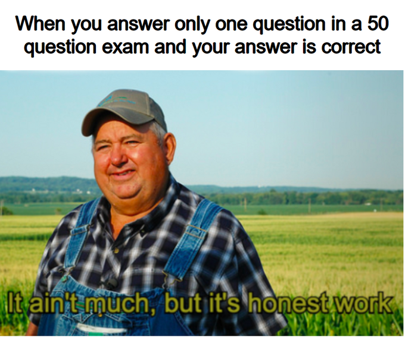
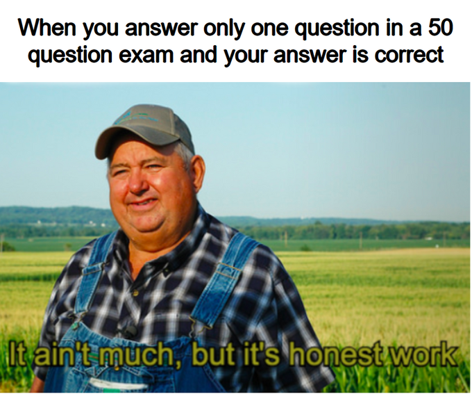
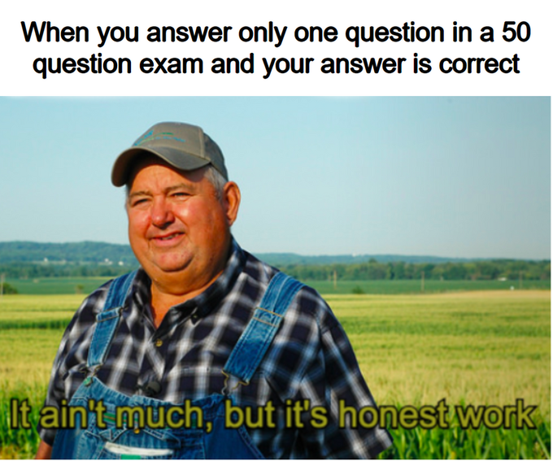

 "It ain't much but it's hones work" wird verwendet, um zu zeigen, das obwohl etwas nicht nach viel aussieht es trotzdem ehrliche Arbeit ist und man es wertschätzen sollte.
| Original | Beispiele | Erklärung | Bewertung |
|
 |
Dieses Meme wurde im Oktober 2014 von dem US Department für Landwirtschaft auf ihrer Webseite in einem Artikel
gepostet. 4 Jahare, später im Dezember 2018 postete eine Reddit-Userin dieses Bild und fügte den kurzen Spruch hinzu. Damit begann der Hipe um das Reaction Meme.
"It ain't much but it's hones work" wird verwendet, um zu zeigen, das obwohl etwas nicht nach viel aussieht es trotzdem ehrliche Arbeit ist und man es wertschätzen sollte. |
Ich bewerte das Meme mit einer 9/10, da es einfach so unglaublich vielseitig und lustig ist. Außerdem ist das Meme immernoch im Trend, obwohl es schon seit Dezember in Gebrauch ist. |